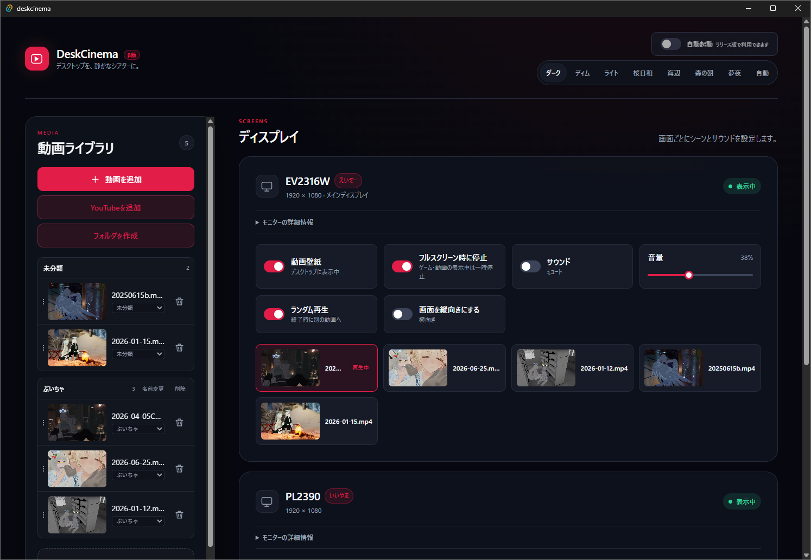

DISPLAY1 Primary display — 1920 × 1080
● Active Video wallpaper Showing on desktop Sound Muted Volume
ocean-loop.mp4 Current scene
A Windows desktop app Beta
Play favorite local videos and YouTube videos behind your desktop. Give every display its own scene, sound, and playback settings.
SCREENS
FEATURES
Choose a video from your library and it plays behind your desktop. Your icons and normal desktop interactions stay right where they belong.

Add MP4, WebM, MOV, and other videos to your library. Play your chosen video as a looping desktop background.
Register regular YouTube videos or Shorts by URL. Build a library of scenes without leaving DeskCinema.
Connected displays are detected automatically. Set each monitor's video, wallpaper state, audio, and volume independently.
Every monitor starts muted. Enable audio only for the screen you want, then fine-tune its volume independently.
Pause wallpapers while a game or video is in fullscreen. Your desktop can stay calm when it is time to concentrate.
Repeat a single video, or switch to another scene when it ends. Playback behavior is set per display.
Check detailed information for each connected monitor right from the app.
Per-monitor settings are tied to the physical display. Swap cables or ports, and names and video assignments come along.
DeskCinema detects wake-from-sleep, resolution changes, and unplugged monitors — keeping your wallpaper in place and recovering it automatically.
Switch a screen to portrait orientation with one click. Video is fitted to portrait monitors too.
Choose a palette for your mood and desktop, from dark through Sakura, Ocean, Meadow, and Dream.
Switch the app interface between Japanese and English to suit your preference and environment.
Use the Agent API and the dedicated Skill to operate the library and wallpaper settings from AI agents or local scripts.
GET STARTED
Install DeskCinema, choose your video, and assign it to a display.
Run the setup file downloaded from BOOTH and follow the Windows installer to finish installation.
Use Add video to choose a local video, or Add YouTube to register a URL. You can organize videos into folders too.
Click a video for a display, then turn on Video wallpaper. It immediately appears behind your desktop.
CONTROLS
Tune video, audio, and playback behavior independently for the way you use each display.
NOTES
Videos that do not allow embedded playback, or that have age or regional restrictions, cannot be played.
DeskCinema is in beta. Behavior can vary by environment, so please begin with a short test before relying on it during important work.